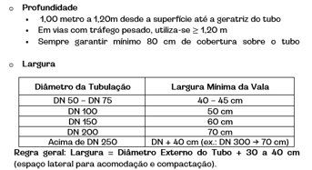
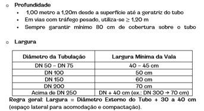
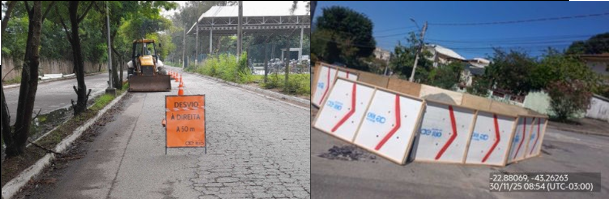
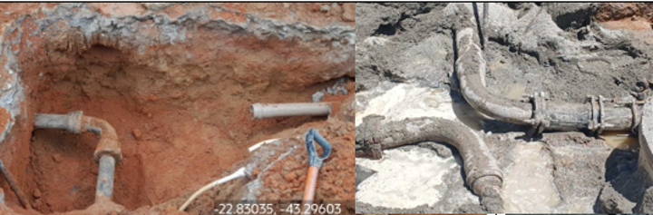
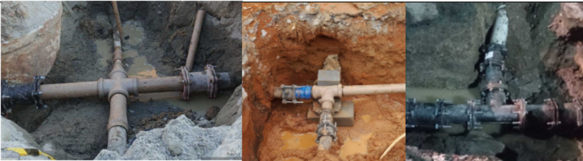
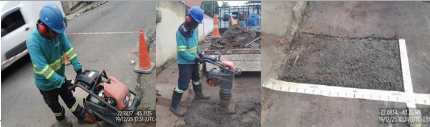

Nesta Ordem de Serviço, será realizada uma interligação entre redes de água. Este serviço é de extrema
importância para a melhoria do abastecimento da população. Siga rigorosamente as boas práticas e orientações
descritas neste guia para garantir a correta execução do serviço.
Deslocamento – Field Service: A equipe deve ativar a rota no sistema e se deslocar
até o local
indicado na Ordem de Serviço, conferindo se a georreferencia informada corresponde ao endereço
físico do ponto de intervenção.
Início – Chegada ao Local: Ao chegar, a equipe deve identificar corretamente o conduto principal e o conduto secundário que serão interligados.
Abertura da Vala: Abra as valas conforme a necessidade do serviço. Primeiro, abra duas valas para expor as tubulações que serão interligadas. Em seguida, faça a terceira escavação no sentido da tubulação que será utilizada na interligação, seguindo as orientações técnicas do serviço.

Limpeza e preparação da tubulação: Após abrir a vala, limpe bem as tubulações que serão interligadas. Retire toda a terra, umidade e sujeira. Deixe visível o local onde será instalado o colar ou feita a ligação.
Instalação de conexões: Instale os colares e conexões conforme o projeto. Garanta alinhamento correto e vedação adequada antes de seguir para a próxima etapa.
Interligação com colar (com furação): Limpe a superfície do tubo. Confirme se o colar é compatível com o material e o diâmetro da rede. Posicione o colar no ponto indicado, alinhado com o sentido do fluxo. Aperte os parafusos de forma alternada. Tire foto do colar instalado antes de furar a rede.
Interligação em PVC ou PEAD (sem furação): Corte o tubo no ponto indicado. Limpe as extremidades e retire rebarbas. Aplique o adesivo correto. Encaixe as conexões e mantenha alinhadas. Aguarde o tempo mínimo de cura antes de liberar a água.
Instalação do tubo de interligação: Após a perfuração da rede e a instalação do colar de tomada, inicie a instalação do tubo de interligação.
Identificação e conferência: Confira o tubo que será utilizado. Verifique o material, o diâmetro e se é compatível com os pontos de tomada executados.
Posicionamento e assentamento: Posicione o tubo entre os dois pontos de ligação. Respeite o sentido contrário ao fluxo, o alinhamento horizontal e vertical e o projeto. Apoie o tubo de forma uniforme sobre a cama de assentamento. Garanta folga suficiente para acomodação e dilatação em tubulações de PVC ou PEAD.
Execução das ligações: Execute as conexões conforme o material do tubo. Para PVC ou PEAD, utilize encaixe e adesivo próprio, garantindo o correto posicionamento das juntas e respeitando o tempo mínimo de cura antes de liberar a água. Para ferro dúctil ou aço, utilize flanges, juntas mecânicas ou solda, conforme o projeto, garantindo alinhamento, vedação e aperto adequado.
Início – Chegada ao Local: Ao chegar, a equipe deve identificar corretamente o conduto principal e o conduto secundário que serão interligados.
Abertura da Vala: Abra as valas conforme a necessidade do serviço. Primeiro, abra duas valas para expor as tubulações que serão interligadas. Em seguida, faça a terceira escavação no sentido da tubulação que será utilizada na interligação, seguindo as orientações técnicas do serviço.

Limpeza e preparação da tubulação: Após abrir a vala, limpe bem as tubulações que serão interligadas. Retire toda a terra, umidade e sujeira. Deixe visível o local onde será instalado o colar ou feita a ligação.
Instalação de conexões: Instale os colares e conexões conforme o projeto. Garanta alinhamento correto e vedação adequada antes de seguir para a próxima etapa.
Interligação com colar (com furação): Limpe a superfície do tubo. Confirme se o colar é compatível com o material e o diâmetro da rede. Posicione o colar no ponto indicado, alinhado com o sentido do fluxo. Aperte os parafusos de forma alternada. Tire foto do colar instalado antes de furar a rede.
Interligação em PVC ou PEAD (sem furação): Corte o tubo no ponto indicado. Limpe as extremidades e retire rebarbas. Aplique o adesivo correto. Encaixe as conexões e mantenha alinhadas. Aguarde o tempo mínimo de cura antes de liberar a água.
Instalação do tubo de interligação: Após a perfuração da rede e a instalação do colar de tomada, inicie a instalação do tubo de interligação.
Identificação e conferência: Confira o tubo que será utilizado. Verifique o material, o diâmetro e se é compatível com os pontos de tomada executados.
Posicionamento e assentamento: Posicione o tubo entre os dois pontos de ligação. Respeite o sentido contrário ao fluxo, o alinhamento horizontal e vertical e o projeto. Apoie o tubo de forma uniforme sobre a cama de assentamento. Garanta folga suficiente para acomodação e dilatação em tubulações de PVC ou PEAD.
Execução das ligações: Execute as conexões conforme o material do tubo. Para PVC ou PEAD, utilize encaixe e adesivo próprio, garantindo o correto posicionamento das juntas e respeitando o tempo mínimo de cura antes de liberar a água. Para ferro dúctil ou aço, utilize flanges, juntas mecânicas ou solda, conforme o projeto, garantindo alinhamento, vedação e aperto adequado.
Algumas equipes utilizam a ordem de interligação para demais tipos de serviços, verifique os casos
que são passíveis para troca no código de serviço.
Seguir com o Preenchimento do Formulário
Encerrar como EXOC e solicitar a OS de sondagem
Realizar a troca do serviço para "145002 - MELHORIAS OPERACIONAIS"
A seguir, são apresentadas as boas práticas para o correto preenchimento do formulário.
“Qual o diâmetro da rede?”: Informe o diâmetro da tubulação utilizada na
interligação entre os pontos
“Material da Rede”: Selecionar o material da tubulação utilizada na interligação
“Localização da Rede?”: Selecionar a posição e direção em que rede de interligação foi assentada
“Qual a profundidade da Rede?”: Informe a profundidade em que a rede da interligação foi assentada. Essa medida pode ser verificada com a fita métrica utilizada no cálculo da vala durante o reaterro, quando disponível.
“Medida total da extensão em metros?”: Informe quantos metros de tubulação foram utilizados para realizar a interligação.
“Material da Rede”: Selecionar o material da tubulação utilizada na interligação
“Localização da Rede?”: Selecionar a posição e direção em que rede de interligação foi assentada
“Qual a profundidade da Rede?”: Informe a profundidade em que a rede da interligação foi assentada. Essa medida pode ser verificada com a fita métrica utilizada no cálculo da vala durante o reaterro, quando disponível.
“Medida total da extensão em metros?”: Informe quantos metros de tubulação foram utilizados para realizar a interligação.
Recomposição de pavimento posterior necessária?
Selecionar a opção e seguir com a finalização da OS
“Qual o número de valas?”: Informe a quantidade de valas que foram feitas, caso
possua mais de uma vala você deverá preencher as informação correspondente.
“Comprimento da Primeira da vala (M): Após aferição, informar o comprimento da vala.
“Largura da Primeira da vala (M)”: Após aferição, informar a largura da vala.
“Metragem da Primeira Vala”: Valor calculado automaticamente (Largura X Comprimento)
“Metragem Total de Todas as valas”: Valor Calculado automaticamente (Vala1+ Vala2+Vala3)
“Comprimento da Primeira da vala (M): Após aferição, informar o comprimento da vala.
“Largura da Primeira da vala (M)”: Após aferição, informar a largura da vala.
“Metragem da Primeira Vala”: Valor calculado automaticamente (Largura X Comprimento)
“Metragem Total de Todas as valas”: Valor Calculado automaticamente (Vala1+ Vala2+Vala3)
A seguir apresentamos o padrão de fotos que deve ser seguido na execução do serviço de Interligação.
Garantir a segurança do local onde será feita a intervenção.

Você deve registrar a abertura da vala e as redes que serão interligadas, garantindo a comprovação
no sistema.

Sua equipe deverá evidenciar a rede devidamente assentada, de ângulos diferente de todo o
comprimento da Extensão

Se sua equipe for responsável pelo reaterro, registre o uso do compactador e mostre a vala recortada
corretamente. A aferição deve seguir os padrões exigidos.

Abrir desdobro de Reaterro de Valas
Finalizar o Serviço
Abrir desdobro de "Repavimentação Concreto"
Abrir desdobro de "Reaterro de Valas"
Abrir o desdobro de "Repavimentação Asfáltica"